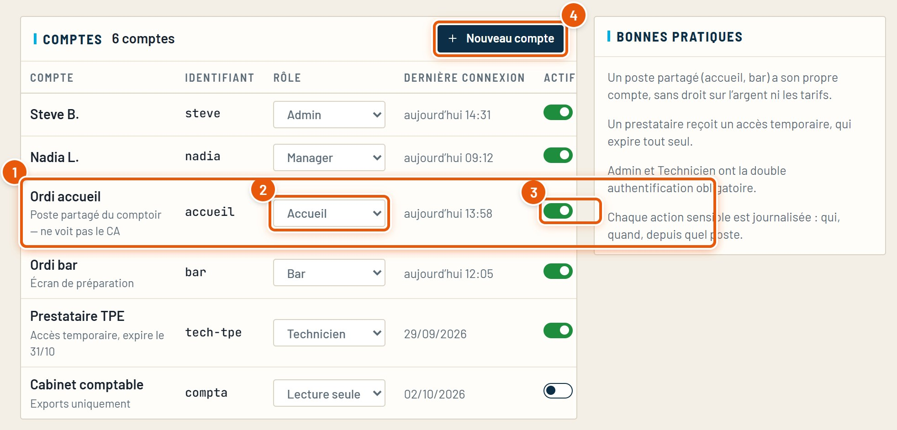
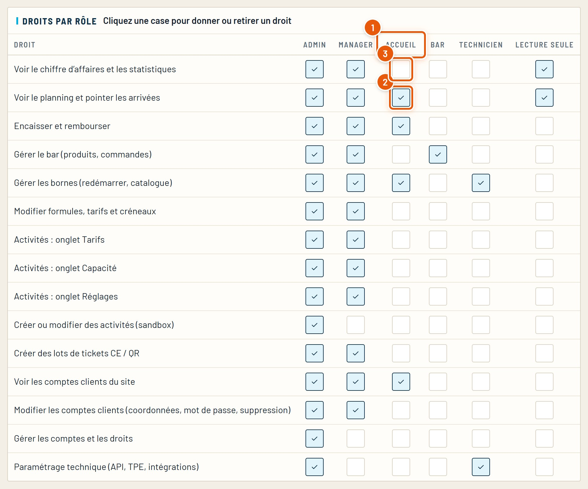
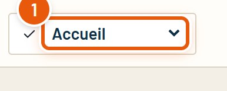
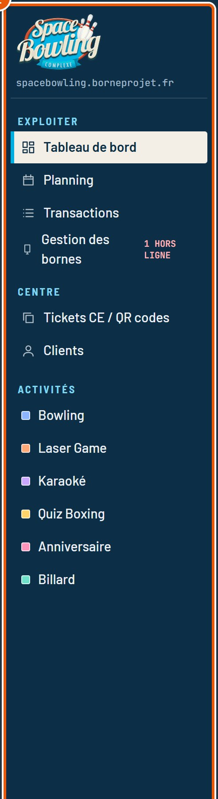

Guide détaillé
Comptes et accès
Les comptes de l’équipe, leurs rôles, les droits de chaque rôle, et comment vérifier ce que voit un poste.
Octobre 2026SpaceBowling Engine
Guide détaillé
Les comptes de l’équipe, leurs rôles, les droits de chaque rôle, et comment vérifier ce que voit un poste.
Chaque personne ou chaque poste a un compte. Un compte a un rôle, et un rôle est une liste de droits. Exemple : le poste de l’accueil voit le planning et encaisse, mais pas le chiffre d’affaires.
Ce qu’il faut regarder est entouré en orange et numéroté. Menu Administratif › Comptes et accès (réservé à l’administrateur).
Une ligne par compte : une personne, ou un poste partagé (accueil, bar).

Un poste partagé (accueil, bar) a son propre compte, sans droit sur l’argent ni les tarifs. Un prestataire reçoit un accès temporaire, qui expire tout seul. Chaque action sensible est notée : qui, quand, depuis quel poste.
Le tableau Droits par rôle : une ligne par droit, une colonne par rôle. Un clic sur une case donne ou retire le droit.

| Rôle | Pour qui | En résumé |
|---|---|---|
| Admin | Le gérant | Tout, y compris les comptes et le paramétrage technique. |
| Manager | Les responsables | Tout le quotidien et les réglages (tarifs, créneaux, bar, tickets CE, clients), sauf créer des activités et gérer les comptes. |
| Accueil | Le poste du comptoir | Planning, encaissement, bornes, voir les clients. Pas de chiffre d’affaires ni de tarifs. |
| Bar | Le poste du bar | Le bar seulement (produits, commandes). |
| Technicien | Un prestataire | Les bornes et le paramétrage technique. |
| Lecture seule | Le cabinet comptable | Voir le chiffre d’affaires et le planning, sans rien modifier. |
Ce que débloque chaque ligne du tableau.
En haut à droite du CRM, le sélecteur de rôle montre le CRM tel qu’un rôle le voit : pratique pour vérifier un réglage de droits.


Revenez sur « Admin » après la vérification.
Les cas les plus courants, et où regarder.
| Ce que vous voyez | À vérifier |
|---|---|
| Un écran manque dans le menu | Le rôle du compte et ses droits (tableau Droits par rôle). |
| Un collègue ne peut pas se connecter | Son compte est actif ; envoyez-lui un nouveau mot de passe. |
| Le poste de l’accueil voit le chiffre d’affaires | Décochez « Voir le chiffre d’affaires » pour le rôle Accueil. |
| Un prestataire a toujours accès | Désactivez son compte. |
Tous les guides du CRM, refaits à partir du vrai logiciel. Ils se trouvent dans le dossier docs.